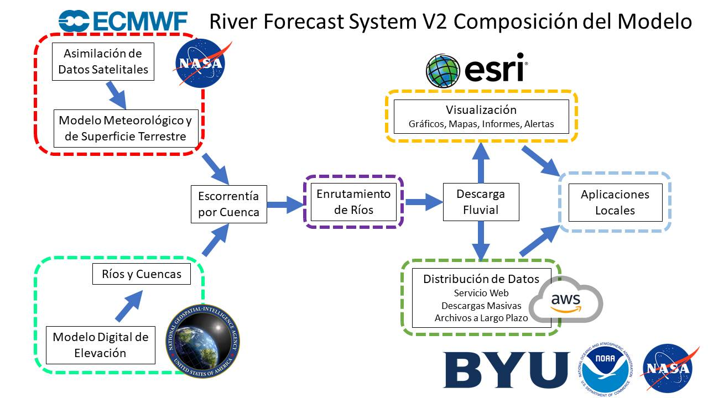

El propósito de esta página es proporcionar una visión general del RFS, incluyendo sus insumos y resultados. Si estás interesado principalmente en usar los datos, puedes omitir esta página y pasar a la siguiente sección.
El siguiente gráfico ofrece una visión general de la formación del RFS.

Insumos
El Sistema de Pronóstico Fluvial (RFS) depende de tres insumos clave, como se muestra en el gráfico:
-
Hidrografía de TDX-Hydro
La red de ríos utilizada por RFS se basa en hidrografía derivada de datos de elevación digital de TDX-Hydro. Para su uso en RFS, esta red es sometida a diversas modificaciones y pasos de postprocesamiento, documentados en el repositorio de postprocesamiento de TDX-Hydro. -
Forzamiento meteorológico retrospectivo (ERA5)
Los datos históricos de escorrentía provienen de ERA5, un producto de reanálisis global del Centro Europeo de Pronósticos Meteorológicos a Medio Plazo (ECMWF). -
Forzamiento meteorológico de pronóstico (IFS)
Las predicciones de escorrentía futura se generan mediante el Sistema Integrado de Pronóstico (IFS), también del ECMWF.
Los datos de escorrentía de ERA5 e IFS se convierten en volúmenes de caudal usando herramientas disponibles en el repositorio basininflow.
La siguiente tabla resume los principales conjuntos de datos de entrada utilizados por RFS:
| Nombre | DOI | Tipo | Productor | Licencia |
|---|---|---|---|---|
| ERA5 | DOI | Modelo de superficie terrestre de reanálisis | ECMWF | Licencia Copernicus - Gratis para uso comercial y no comercial con atribución |
| TDX-Hydro | Enlace | Hidrografía de ríos y cuencas | NGA | Licencia TDX-Hydro - Disponible públicamente, se proporciona "tal cual", sin garantía |
| Sistema Integrado de Pronóstico 48R1 | Enlace | Modelo de superficie terrestre de pronóstico | ECMWF | Requiere licencia de pago |